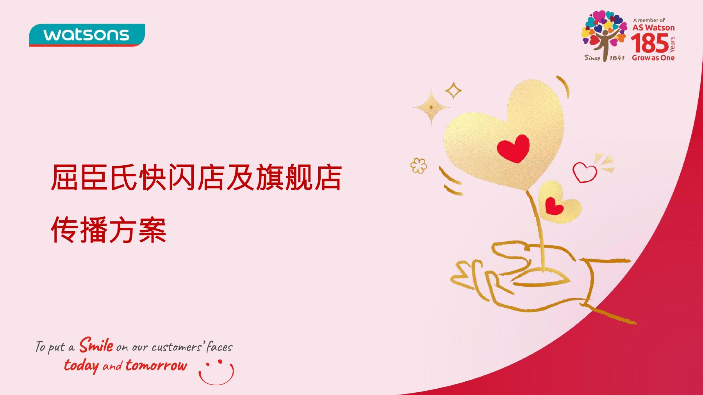

受众与主张
方案第 3 页区分品牌商、商业地产方与消费者，对应合作信心、引流价值和情感共鸣。
05 / STRATEGY / 策划
博雅公关广州 Brand Marketing Team · PR 实习生 · 2026.02–2026.03
MY ROLE
我在博雅公关实习期间参与屈臣氏 185 周年整合营销及相关传播方案策划，承担方案物料与媒体对接工作；本页展示其中关联的传播提案材料。
OVERVIEW
围绕屈臣氏185周年与新店布局，方案区分品牌商、商业地产方和消费者三类沟通对象，将复古快闪店的城市记忆与上海旗舰店的创新体验整合为双线叙事，并规划新闻稿框架、媒体矩阵及传播节奏。作品体现把品牌定位转化为具体内容与渠道动作的能力，实际执行效果仍待补充。
CAPABILITY IN PRACTICE
方案第 3 页区分品牌商、商业地产方与消费者，对应合作信心、引流价值和情感共鸣。
第 4–7 页呈现双线信息框架，将复古快闪与旗舰店创新转化为稿件标题和正文结构。
第 8–10 页规划媒体矩阵、传播节点及年度节奏，呈现目标与资源安排。
READ THE COMPLETE WORK
下方展示完整作品，可连续翻页或跳到任意一页。

点击页面可放大查看。阅读器聚焦后可用左右方向键翻页。